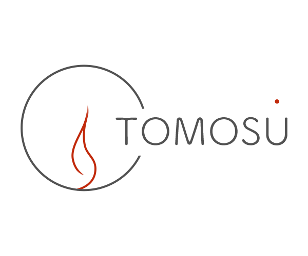
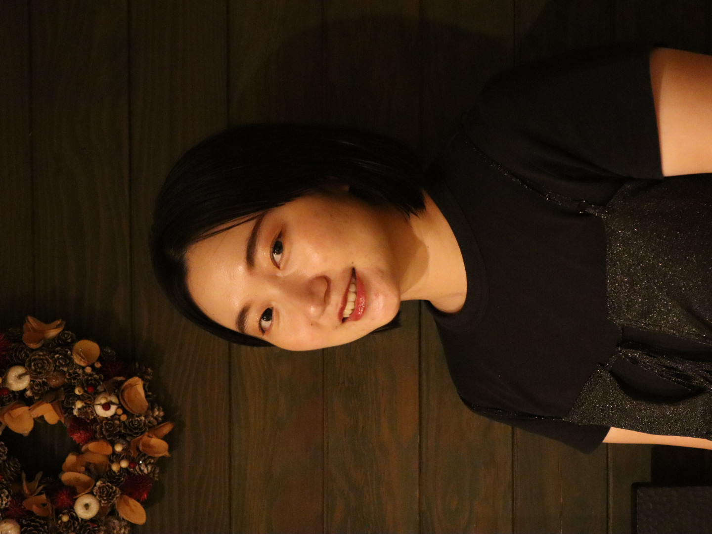

セラピスト

経歴
- 日本女子体育大学 舞踊学専攻 卒業
- 全国展開の大手整体サロン勤務
- リラクゼーションサロン勤務
- 現在は、リラクゼーションサロンで勤務しながら個人セラピストとしても活動中
メッセージ
幼少期から新体操やダンスなど身体を使い表現することを学んできました。
その頃から身体の不調があれば、マッサージや整体にお世話になることが多く、いつかは同じような身体の悩みを抱える方に自分の手で癒しを提供したいと考えるようになりました。
大学卒業後はセラピストの道へ進み、自分の手でお客様に感動を与えられることにやりがいを感じ、企業やルールに縛られることなくお客様にできる全てのことを詰め込みたいという思いから「TOMOSU-灯-」を立ち上げることにいたしました。
お客様がご来店した時の感情や気分、お身体の疲れ具合はその時々で変わってくると思います。
カウンセリングを通してその時のお身体や目的に一番合った施術をお客様とご相談しながら提供するため、メニューは「オーダーメイド美容整体」のみとなっております。
マッサージをして終わりではなく、日頃のお悩みを少しでも軽減できるように簡単にできるセルフケアの方法をお伝えしたり、ご自身のお身体と向き合えるきっかけを作りたいと思っております。